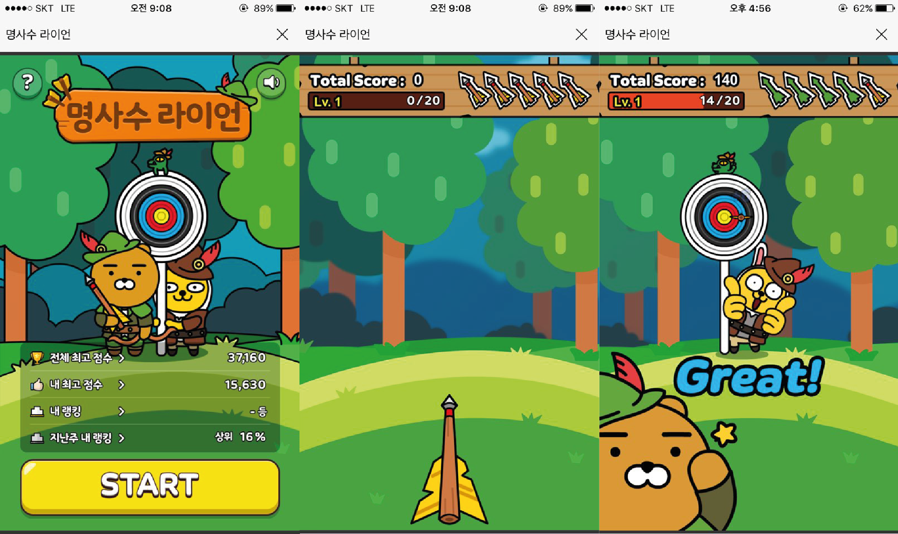
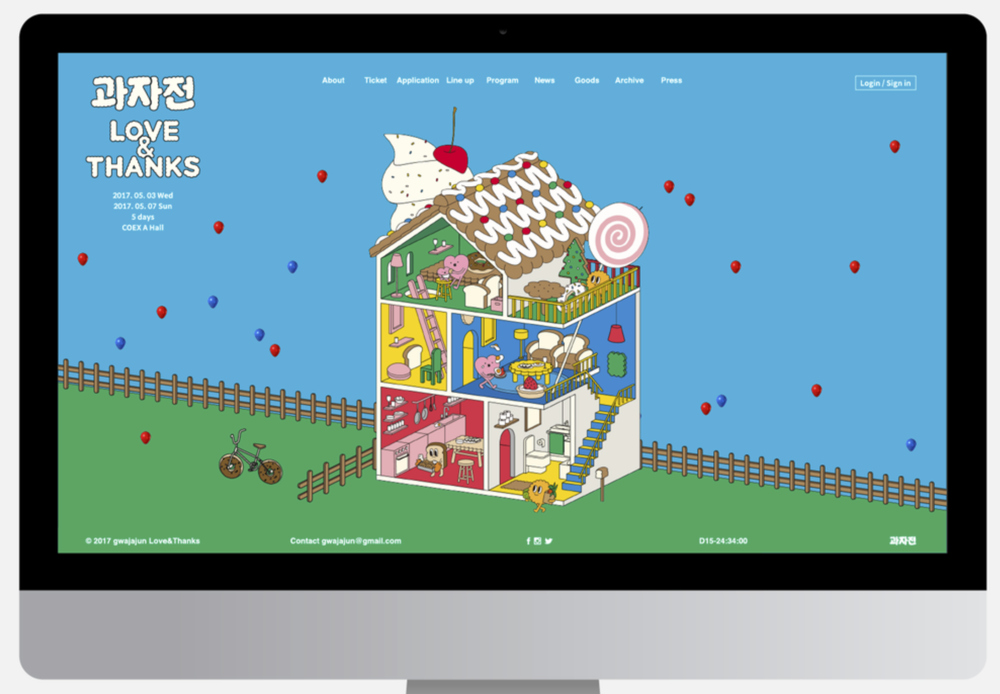

누구나 금방 할 수 있는 스낵게임. 단순 활쏘기 게임으로 점수가 오를수록 레벨과 난이도가 높아진다. 랭킹 기록이 가능하다. 캐릭터는 하트와 다트. 게임 컨셉은 사랑스러움이고, 하트가 다트를 좋아하는데 그가 자신에게 사랑에 빠지도록 큐피드의 화살을 쏘는 것이다.
1. 카카오게임 (명사수 라이언)
게임을 굉장히 좋아하는데 평소 자주하던 게임이 딱 떠올라서 한방에 주제를 정했다. 귀여운 카카오 캐릭터에 플랫한 일러스트와 모션까지 참 잘만든것 같다. 게임이 끝나면 내가 랭킹 상위 몇%인지도 알려준다.

2. 과자전 홈페이지
과자전 홈페이지를 들어가면 클릭해서 터뜨릴 수 있는 풍선들이 떠다닌다. 터질때 펑, 꺅 등 귀여운 글씨가 나타난다.(작년꺼라 지금은 없음) 저번 학기부터 만들고 싶었는데 자바스크립트라 어려워서 못 만들었다. 이번에 해보고싶다.
